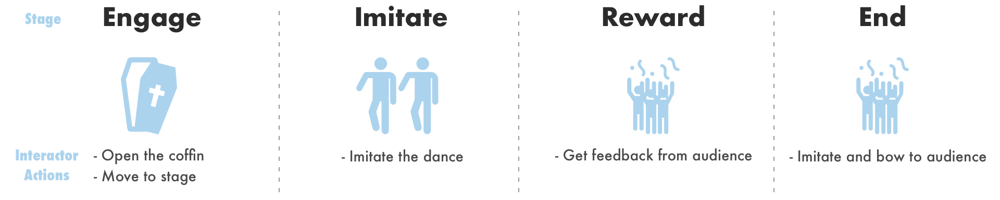
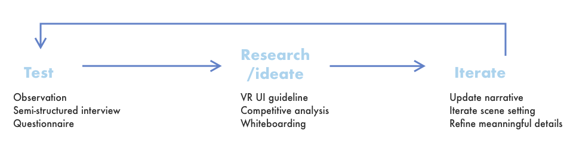
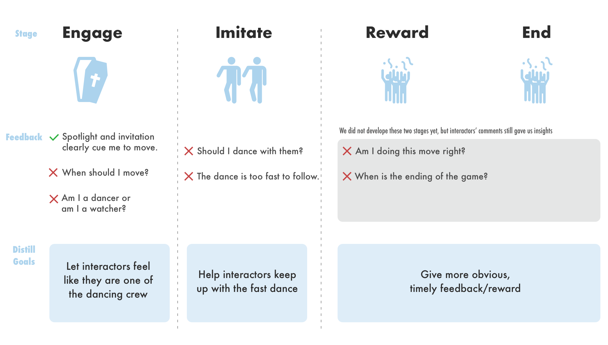
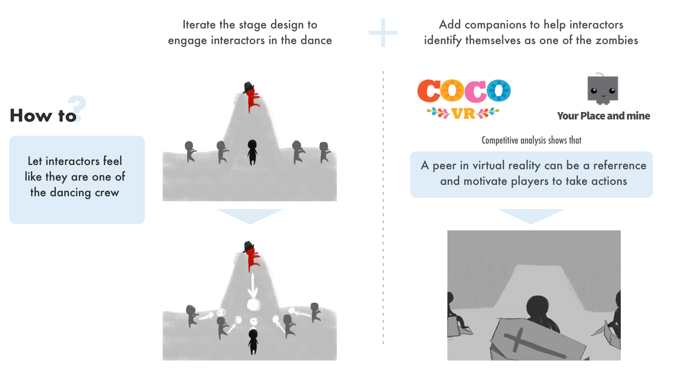
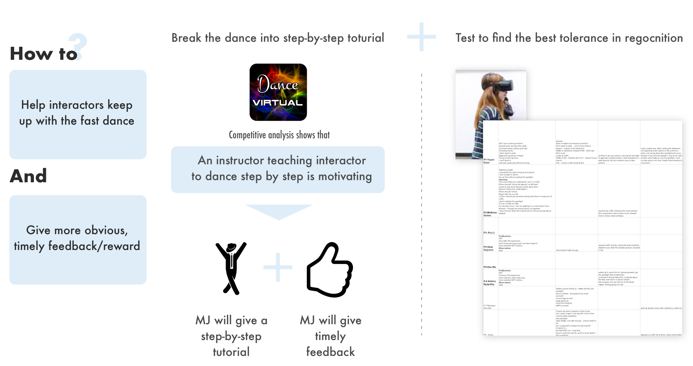
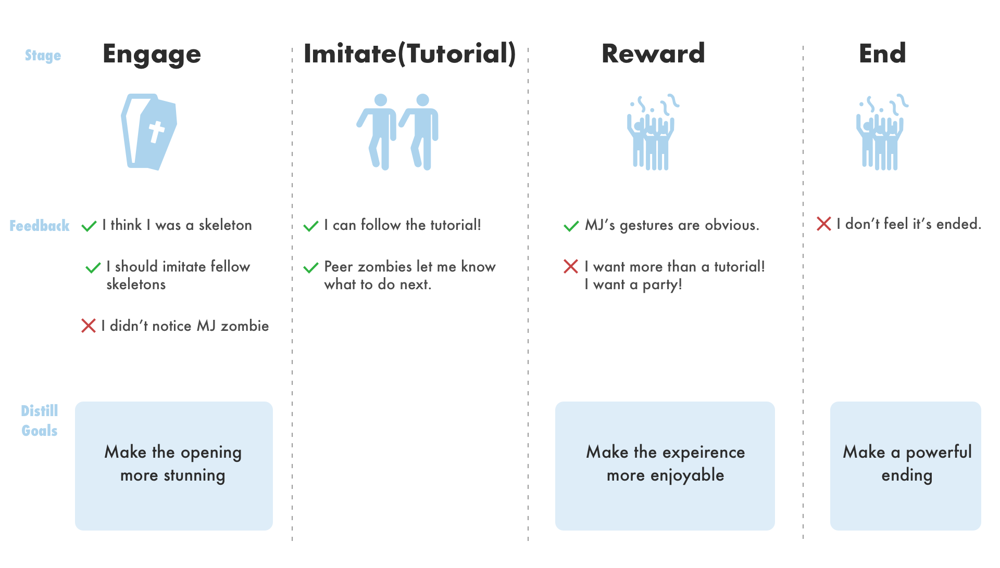

The design challenge of our project is how to create immersive interactions, motivate interactors to engage with virtual characters and enhance interactor’s experience in VR narrative.
We narrowed down the problem space to imitating virtual characters and created a 5-minute experience VR game as our solution (concept video shown above). In the game, we use diegetic incentives that don’t break immersion to cue interactors to take actions.
I was the project manager of our team, responsible for maintaining schedules and scope, arranging user tests, presenting to professors, creating concept video and ensuring the delivery of the final prototype. I was the experience designer, brainstorming narratives, sketching scenarios, iterating the experience based on 3 rounds of user testings. I also had fun animating 3D assets in Motion Builder.
Huan Deng, Tony Jin, Yannu Li, Shengxi Wu
Sept 2018 - Dec 2018 (16 weeks )
Whiteboard
Unity 3D
Motion builder
The initial narrative of our project starts inside a coffin where the interactor will hear MJ’s thriller. Moving outside the coffin, he will find MJ zombie dancing with other zombies on the stage for a huge zombie audience. Then MJ zombie will invite him to dance along with the music. When he gets the correct move, the audience applaud and the game ends.
The narrative includes the following five main stages, we brainstormed detailed ideas of each stage and imagined the initial scene.
I visualized the stage concept and environment setting on whiteboard to facilitate the discussion.
Having determined the initial ideas, we moved on to develop the following narrative in Unity. We made a good use of online resources like sketchfab to accelerate the development and test the prototype constantly to iterate.

We got 2 major chances to validate the design with other people: one Lab Demo day where we pitched our design to 13 visitors and let them test what we had; and one external test where 6 people tested the prototype.
We also had constant unofficial testings on our own, including one internal test where 4 people working in the lab on VR projects tested the prototype, gave feedback and piloted our testing procedure of the final external usability testing.

We made two big iterations on the narrative based on the feedbacks and generated ideas inspired by the research and brainstorming sessions.
The first two feedback session and tests helped us to refine the narrative so that interactors can compete the game without difficulty.
Our prototype shown to 13 visitors on Lab Demo day had the following narrative. We take notes individually and discussed as a team to mark those most important feedback of each stage, distilled goals to achieve in the next iteration.

On how to achieve those goals, we did some research individually, I and Huan looked into different VR games to look for inspirations. As a team, we had many meetings to brainstorm together. I kept visualizing the scenes to facilitate discussions and provided key ideas based on research.


Before External user testing, almost all the interactors were already able to follow the designed interaction narrative and join the dance in our constant unofficial testings. But how can they enjoy the game more？
In external usertesting, we had 6 participants from whom we got positive feedback on the narrative, but were challenged more in terms of the environment details and enjoyment.

This time, we let our minds loose and came up with wildest ideas that would be enjoyable. Let me give you a peep into our final prototype: rising stage, fireworks, more SFX and etc. These details proved to be satisfying in our final demo.
On Dec 12th 2018, we presented our final demo to visitors where they had a lot of fun!
Error prevention in VR: People went wrong in the narrative but there is no clue to ask them head back, what can be the exit button in virtual reality?
Be proactive as a project manager and experience designer: in VR design, it’s hard to gain insights without fully developing the prototype and test it out. So I have to be proactive to prioritize design ideas and measure its difficulty with our developer and modeler, update our project schedule accordingly.
Showing is over talking: our meeting sometimes went lengthy and unproductive due to misunderstanding. Whenever I detected that we are repeating stuff, I facilitated our discussion by visualizing them on whiteboard which proved very useful.
Explore design patterns while refer to existing ones: UI in VR is still a new field with less previous examples to refer to, we had fun exploring what is valid and what is not in the design- development- test- iterate process.